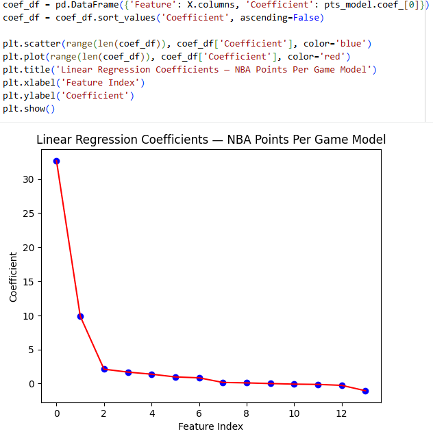
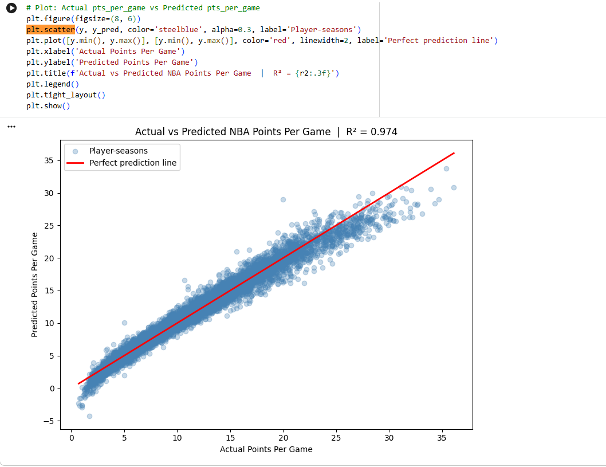

01 — Dataset
NBA Stats 1947–Present
Data sourced from Basketball Reference via Kaggle
(sumitrodatta/nba-aba-baa-stats).
Filtered to the modern NBA era (2000–present) and players averaging 10+ minutes per game to ensure meaningful sample sizes.
02 — Feature Engineering
Cleaning the data before modelling
tov_per_game. It was highly correlated with fga_per_game (high-usage players do both). Keeping both gives the model redundant information.
MinMaxScaler to numeric features. One-hot encoded player position with pd.get_dummies().
03 — Model
Multiple Linear Regression
A sklearn.linear_model.LinearRegression model trained on the cleaned dataset. With 10 input features the model finds a hyperplane of best fit rather than a simple line.
import sklearn
pts_model = sklearn.linear_model.LinearRegression()
pts_model.fit(X, y)
# R-Squared
pts_model.score(X, y)
# Predict a new player
pts_model.predict(hypothetical_scaled_df)
Index 0 = fga_per_game · Index 1 = fg_percent · Index 2 = ft_percent · Index 3 = trb_per_game · Index 4 = ast_per_game · Index 5 = blk_per_game · Index 6 = x3p_percent · Index 7–13 = position encodings (PG, C, PF, SG, SF) · negative = mp_per_game, stl_per_game

As you can see the R^2 score is .974 which is extremely good. This is because field goal attempts per game is a almost direct mathematical input to the amount of points scored in a game. Unless the player sucks, more attempts in the NBA usually means more points.
04 — Key Insight
Volume beats efficiency
The coefficients in the model clearly show that shot attempts per game is the strongest predictor of scoring, way higher over field goal percentage. While making your actual shots mattered, the actual volume showed over a times three multiplier in relevance. This makes sense because a bench player who got 3 minutes but made 2/2 shots will have less points than a player who played for 20 minutes but had a 67% field goal percentage.
The model confirms what most basketball fans already know: Lebron James is only the all time leading scorer because hes been in the league since the dinosaur ages! If Michael Jordan played just as long as Lebron, He would have more shot attempts and therefore points, meaning there would be a more definitive answer as to who the GOAT is.
05 — Limitations
What the model can't see
Per-game stats conflate player skill with coaching decisions. A player on a bad team may get more shot attempts simply because no one else is available. Think of Lebron James in the 2007 NBA Finals. The model also can't account for role players (defensive players like Dennis Rodman who never were meant to score), injury-shortened seasons, or team offensive system.
A more complete model would incorporate team context, advanced metrics like usage rate, and opponent defensive ratings.
It goes without saying that this model was trained on training data only. A true train test split would give a more accurate measure of how accurately it generalizes unseen players.